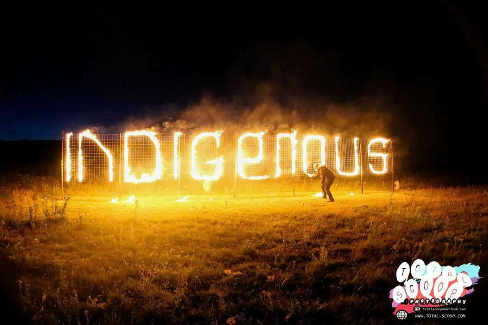
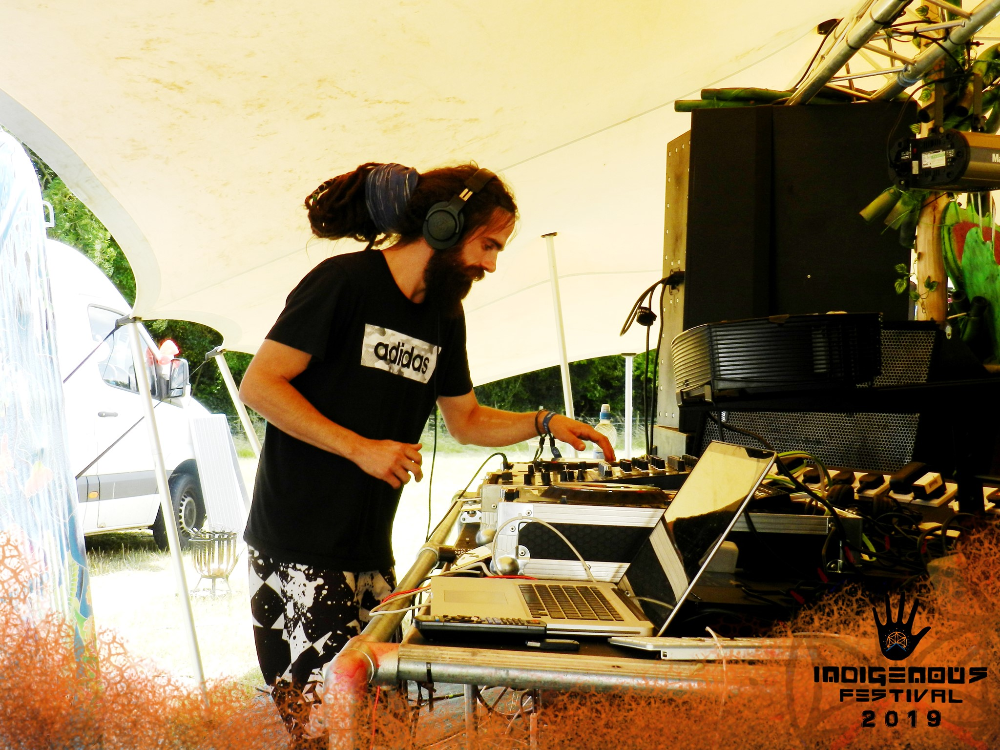
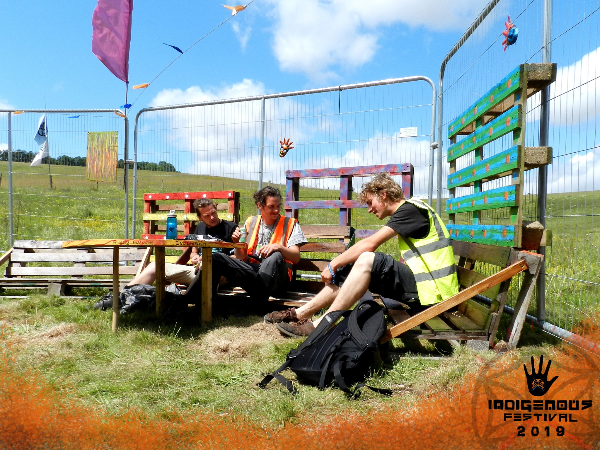

I currently am a co-owner of Indigenous Festival, this is set in a hidden valley in Hampshire, it is a place to rekindle the spirit of our tribal ancestry, our connection to the Earth and to build a sense of community. Creating a sense of oneness, harmony and connecting people through music art and dance.
Celebrating freedom and the beauty of nature in an uplifting and spiritual environment. A haven created for non-commercial music lovers where you can come and get lost in the mind bending sounds and immersive stage design. We invite you to experience some of the best established and upcoming artists from the psychedelic music scene.
Local two stage festival with catering and camping facilities. Our vision is to create a whole new experience for party goers... Our aim is to promote tranquility and celebrate freedom by creating a therapeutic environment and haven for non commercial music lovers where you can come and be at one with the music, be surrounded by like minded people. After the success of the first ever Indigenous Festival we aim to make every year bigger and better.


